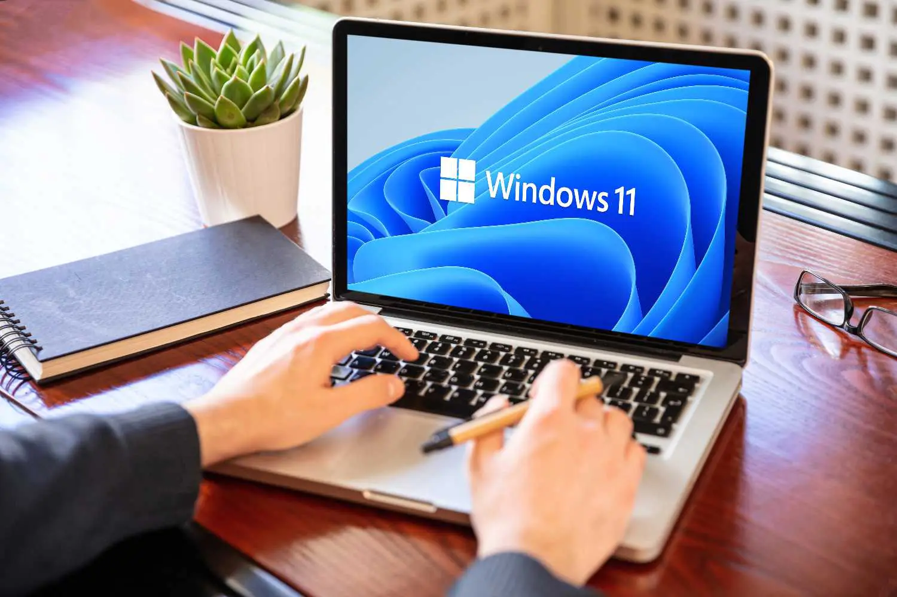

Aqui você irá saber diveras informações, curiosidades e novidades do windows, de hoje em dia até a sua criação.
clique nas opções a cima para explorar o site.
SOBRE
O Windows é um sistema operacional de interface gráfica multitarefa. Isso significa que podemos trabalhar com vários programas simultaneamente. Por exemplo poderíamos escutar um CD colocado no CD-ROM enquanto escrevemos um documento, imprimimos um outro e recebemos um fax, todos ao mesmo tempo.
O Windows alcançou grande popularidade e dominou o mercado para computadores pessoais ao longo de sua história. Desde 1985, várias versões do Windows foram lançadas — com maior ou menor sucesso — e incluem famílias e subfamílias de sistemas que atendem não apenas consumidores, mas também diversos setores da indústria de computação.

INFORMAÇÕES
Tudo começou em 1981, quando chegou às lojas o primeiro PC (Personal Computer, em português, “computador pessoal”) da IBM. Na época, considerado um poderoso computador, apesar de ter apenas um processador de 4.7MHz, 64KB de memória e um drive de disquete de 160KB. Para viabilizar o uso desse computador, a IBM encomendou à empresa recém-criada por Paul Allen e Bill Gates, a Microsoft Corporation, o desenvolvimento de
um sistema operacional. Foi daí então que surgiu o MS-DOS (MicroSoft Disk Operating System, em português, “Sistema Operacional em Disco da Microsoft”).
entre aqui para mais informações
VEJA VÍDEOS SOBRE
veja a empresa da microsoft, nos estados unidos, Redmond Washington.